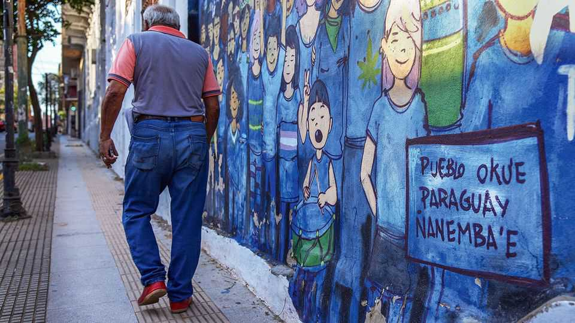

The South American hipster language cooler than Spanish
Why Guaraní has become trendy in Paraguay

Aug 20th 2026
One hour into their Guaraní class, the medical students at the National University of Asunción are enthralled. One group provides “pytyvõpya’ehasývape” (first aid) for a “kangue opẽ” (broken bone). Another frets that a problem with the “tajygue mboaty rehe” (nervous system) may require “ñembovo” (surgery). The course is mandatory for Paraguay’s future doctors, part of a wave of official measures to promote the indigenous language. Few seem to mind. “I love speaking Guaraní—it’s much friendlier than Spanish,” says Tadeo Ramírez, an undergraduate.
Such zest reflects the recent revival of Paraguay’s ancient tongue. Just 2.3% of the population identifies as indigenous, but some 90% understand Guaraní. Nearly 40% speak it every day at home along with Spanish, according to a recent survey. That is one of the highest rates of bilingualism in the world, far ahead of official diglots like Canada and Ireland. Most of this is “Yopará”, a blend of Spanish and Guaraní (the word means “mixture” in Guaraní). “It’s our lingua franca,” says Miguel Ángel, a taxi driver. Paraguay is one of only two countries in the Spanish-speaking Americas with an official second language.
Paraguay’s elites had long snubbed Guaraní as a rural vernacular, mocking its nasal sounds and glottal stops. Dictator Alfredo Stroessner discouraged its use in schools in the 1950s and 1960s. Only with the return of democracy in 1992 was Guaraní recognised as Paraguay’s official language alongside Spanish. A law in 2010 created a bilingual curriculum and administration. Today Paraguayans can choose to vote, marry and stand trial in Guaraní.
This has facilitated a cultural craze. In June Paraguayan football fans attributed their World Cup win over Germany to “Guaraní spirit”. In May the national symphony orchestra performed Beethoven’s “Ode to Joy” in Guaraní for the first time. In April Spain’s Queen Letizia opened her message of congratulations for the anniversary of the Spanish cultural centre in Asunción with “¡Vy’apavẽ ne arambotýre!” (”Happy Birthday!”). Youngsters are joining in. Influencers fill TikTok and Instagram with vocab tutorials; artists pump Yopará rap and jazz onto Spotify. Trendy parents give their children names like Yerutí (dove) and Marangatu (virtuous).
Some worry that growing bilingualism comes from Guaraní speakers learning Spanish rather than vice versa. The share of monolingual Guaraní speakers dropped from 28% in 2002 to 12% in 2022. “It’s a process of displacement,” says Arnaldo Casco of the Secretariat of Linguistic Policy (SPL), a ministry. It has responded by publishing reams of Guaraní content, from technical dictionaries to poetry. Guaraní must cover all spheres of social interaction, says Javier Viveros, the SPL’s boss.
Others are laid back. Spanish monolingualism is flat. Guaraní is on Google Translate and Wikipedia (“Vikipetã”). SPL staff are training large language models on it. Social norms have shifted. “We who have gone through that experience of being hesitant to speak Guaraní as children today feel absolutely free,” says María del Carmen Giménez of the Patria Soñada Institute, a think-tank. That speaks volumes. ■